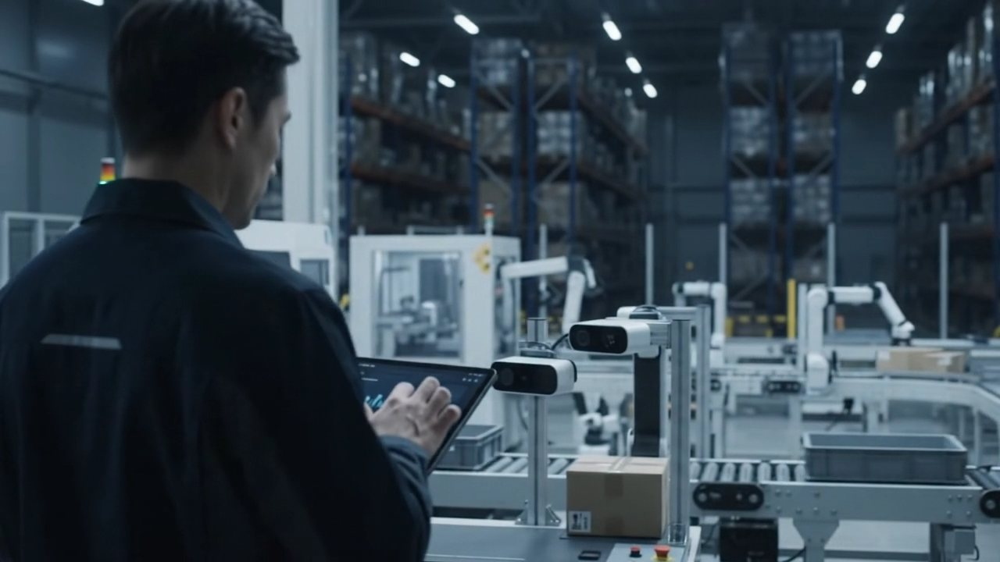

JOIN PAL
現場から、事業の仕組みまで。
次の変化をつくる仕事。
現場・技術・営業・輸送・コーポレート。さまざまな専門性を持つメンバーを募集しています。
応募先URLの設定前です。応募の受け付けはまだ開始していません。

キャリア採用
顧客の現場を請け負い、自分たちの責任で回す。
技術と現場の両方に立つPALだからできる、"当事者"の仕事が、ここにある。
※映像はイメージです
Our jobs
PALには9つの職種があります。それぞれの仕事内容は「仕事を知る」で、募集条件は「募集職種」でご覧いただけます。

現場・技術・輸送。それぞれの専門性を持つ人が、同じ現場で仕事を進めています。
People
見出しは、本人がインタビューで語った言葉です。ほかの社員の話は「人を知る」でご覧いただけます。
After joining
仕事の理解から、担当範囲の広がりまで。進み方は職種・配属先・本人の経験によって異なります。実際の1日の流れと職種ごとの道すじは「キャリア」で紹介しています。
JOIN PAL
現場・技術・営業・輸送・コーポレート。さまざまな専門性を持つメンバーを募集しています。
応募先URLの設定前です。応募の受け付けはまだ開始していません。